available from the workspace")
Hands-on Start Guide
From idea to a working asset-tracking prototype with Renesas 365
Asset Tracker with Edge AI Motion Analysis
This hands-on lab takes you from an idea to a working asset-tracking prototype in about one hour using Renesas 365, the industry’s first intelligent, platform-based development environment. You will load a complete, ready-to-evaluate solution from the Xplore Developer Hub, review the system design, build the software in the browser, then flash, debug and run it on real hardware.
The solution combines an RA6E2 MCU, Reality AI motion classification, Bluetooth® Low Energy (BLE) from Renesas and the Hubble Network IoT platform to detect, classify and report critical movement events such as drops, shakes and application-specific gestures.
Important: To ensure the lab runs correctly, complete the steps in the order listed in “Lab Procedure”.
The boards used in this lab are available from the Renesas website: FPB-RA6E2 Fast Prototyping Board and US159-DA14531EVZ Low-Power Bluetooth Pmod Board. The TDK accelerometer QCIOT-ICM42670POCZ.
Hardware components:
FPB-RA6E2 Fast Prototyping Board (RA6E2 MCU host with on-board J-Link debugger)
US159-DA14531EVZ Low-Power Bluetooth Pmod Board (DA14531 BLE radio)
QCIOT-ICM42670POCZ Pmod Board with ICM42670 3-axis accelerometer
USB cable
The role of each board is summarised in Table 1.
Table 1. Boards and Devices Used
| Function | Board / Device | Role |
|---|---|---|
| MCU host | FPB-RA6E2 Fast Prototyping Board | Runs the FreeRTOS application, acquires and processes sensor data, and controls BLE communication. |
| BLE connectivity | US159-DA14531EVZ Low-Power Bluetooth Pmod Board | Provides the DA14531 BLE radio and communicates with the RA6E2 over UART/GTL. |
| Motion sensing | QCIOT-ICM42670POCZ / ICM42670 module | Provides 3-axis acceleration data over I²C and a data-ready interrupt signal. |
A PC with a web browser and internet access
A MyRenesas account to sign in to Renesas 365
Your user ID: the unique number on your table (used for cloud provisioning)
J-Link RTT Viewer (SEGGER) to view the local event log
Renesas 365 is an intelligent, platform-based development environment that connects system design, hardware and software in one workspace. Everything in the workspace is contextually modelled by the platform, so it understands your design and provides the right information at the point of need.
All Xplore assets are delivered through Renesas 365. The Xplore Developer Hub is your starting point to find complete solutions, reference applications and software building blocks, filtered by application or board.
The following list highlights the platform capabilities used in this lab.
Contextual intelligence: the platform understands your design
Connected domains: system design (ESD), hardware and software, logically linked
Unified workflow: one environment, from idea to working prototype
Software building blocks: built, tested and validated by Renesas; over 150 at launch
Web IDE: edit, compile, debug, download and run from the browser, with nothing to install
Collaborative workspace: share, be shared with, and get notified when things change
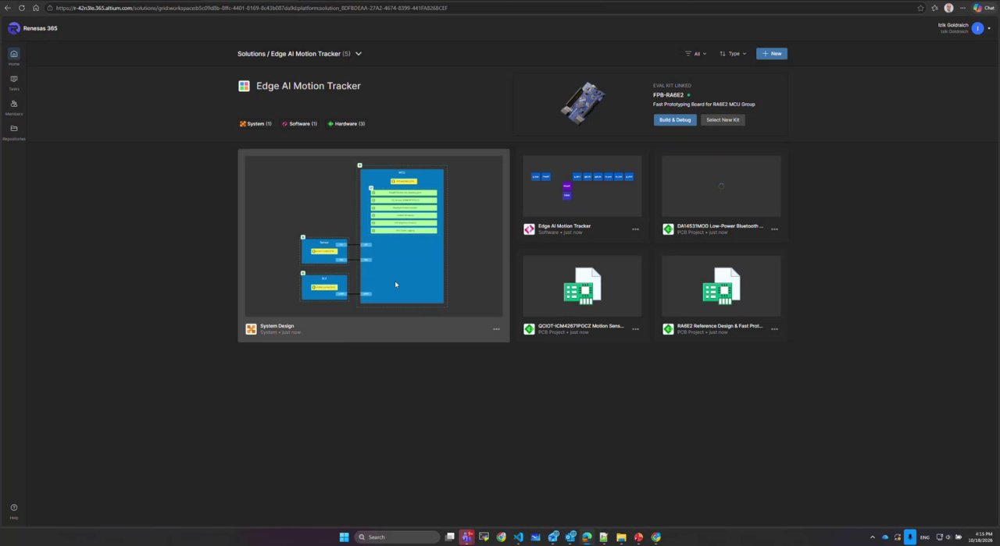
Figure 1. Renesas 365 solution workspace: system design, hardware and software, linked
This section provides a step-by-step procedure to load, build, run and debug the asset tracker reference application using Renesas 365.
Goal: detect critical events in an asset’s life and report them automatically. The MCU-based solution senses the asset condition, classifies on-device which events matter, and logs and reports them for follow-up.
Sense: the ICM42670 accelerometer continuously measures movement and vibration.
Detect: a pre-trained Reality AI TinyML classifier runs on the RA6E2 and classifies motion into events, for example drop/fall (critical damage event) and circle or wave gestures (stand-ins for your own application-specific events).
Report: classified events are broadcast as BLE beacons to the Hubble Network and logged locally over RTT.
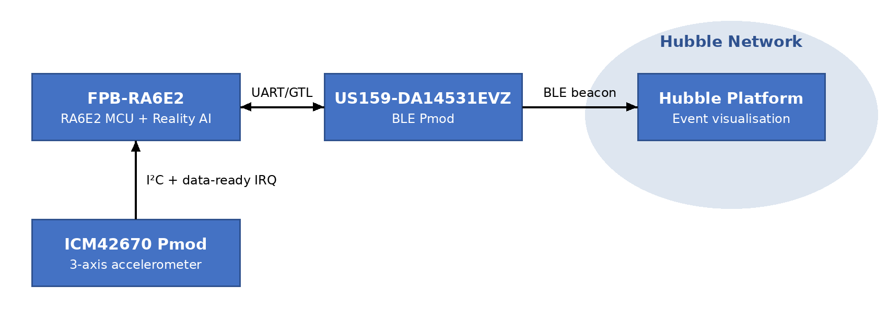
Figure 2. Asset tracker system block diagram
The software is assembled from the reusable building blocks listed in Table 2.
Table 2. Software Building Blocks
| Software Building Block | Purpose |
|---|---|
| Sensor over I²C | Acquires accelerometer data |
| Reality AI Motion Classification | Identifies drops, shakes, circular motion and other movement patterns |
| BLE Beacon Broadcast | Wirelessly transmits classified events |
| Hubble Stack | Connects the device to the Hubble IoT ecosystem |
| Event logging and LED | Logs each event locally (RTT) and gives visual feedback |
Note: The AI classifier is pre-trained for this lab; it can be retrained on your own events. Hubble is the example cloud: every software building block is swappable.
Plug the two Pmod boards into the FPB-RA6E2 with the Renesas logo upright:
Top: the BLE Pmod (US159-DA14531EVZ, green antenna).
Bottom: the accelerometer Pmod (ICM42670, black connector).
Connect the FPB-RA6E2 to your PC with the USB cable. The on-board J-Link is used for flashing and debugging; no external probe is required.
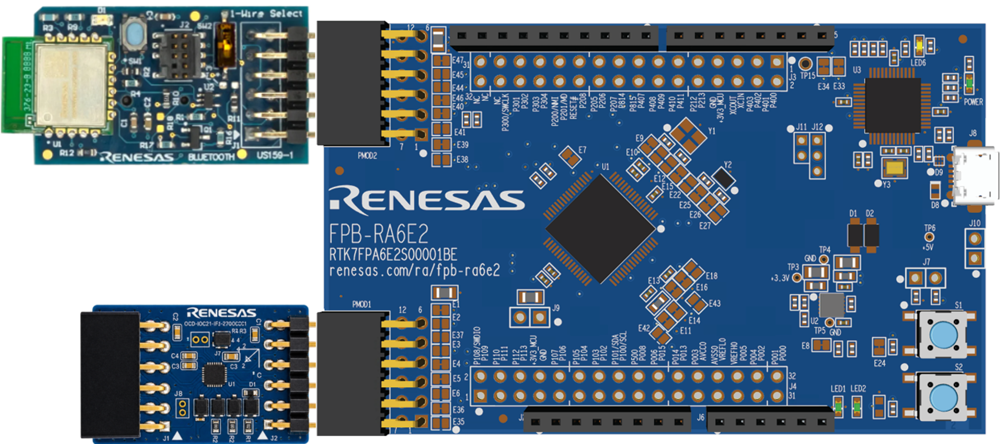
Figure 3. FPB-RA6E2 with BLE Pmod (top) and accelerometer Pmod (bottom)
Open the Xplore Developer Hub in your browser: https://renesas.com/Renesas365/Xplore
Filter by application or board, or search by functionality.
Select the Tracker with Edge AI Motion Analysis solution and click Experience now.
Sign in with your MyRenesas credentials if prompted. Renesas 365 opens with the full working solution in your workspace.
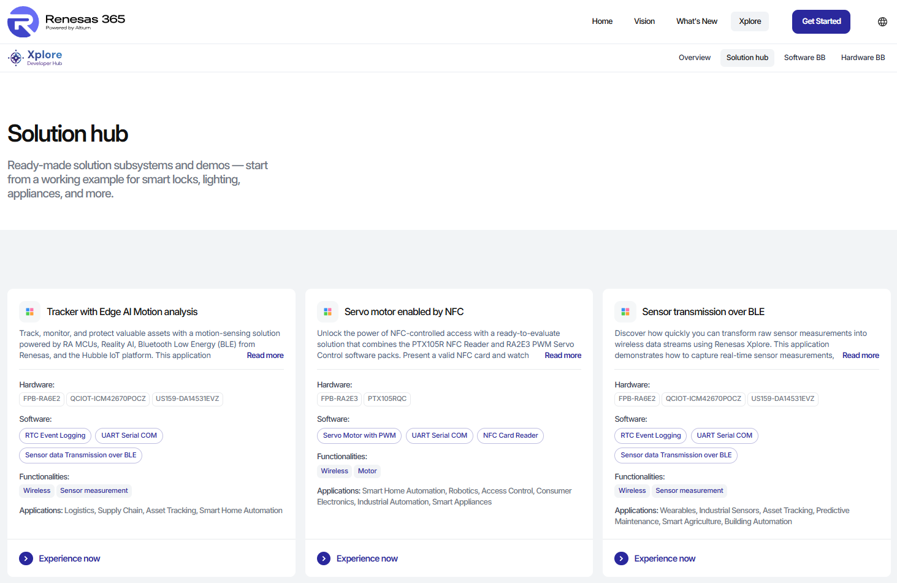
Figure 4. Xplore Developer Hub: filter by application or board. Click on “Experience now”
Note: This is not a single software building block: it is a complete solution, to experiment with or to base your product on.
From the Renesas 365 home page, open the solution. The workspace has three linked domains:
ESD (Electronic System Design): the system design.
HW: the boards and their reference designs.
SW: the software project, opened in the web IDE.
Note that the workspace is collaborative: you can share it and get notified when things change.
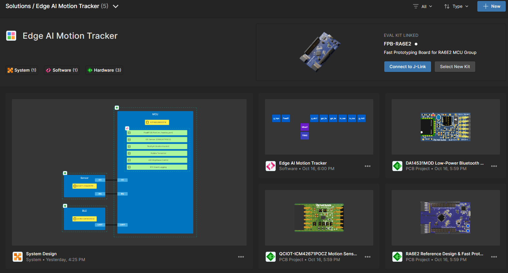
Figure 5. Renesas 365 Solution Project in your workspace
Open the ESD view. The system is sketched in blocks: compute, sensor and connectivity, each with hardware and software “blankets” (the logical representation of the hardware and software).
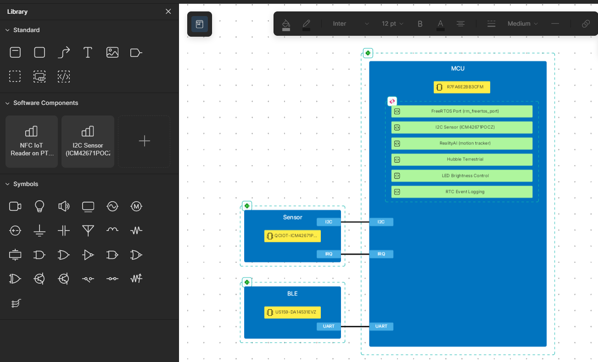
Figure 6. ESD: Block diagram overview of hardware and software building blocks
Click a on the MCU hardware building block (blue rectangle). The platform shows contextual information and documentation at your fingertips: always the right version, nothing to download.
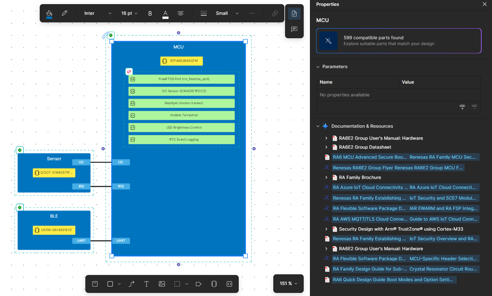
Figure 7. Select MCU building block show the related documentation
Select the BLE module and review its port and pins. The BLE Pmod connects over UART. The platform is aware of the device and its pins: change the device and the pin mapping follows.
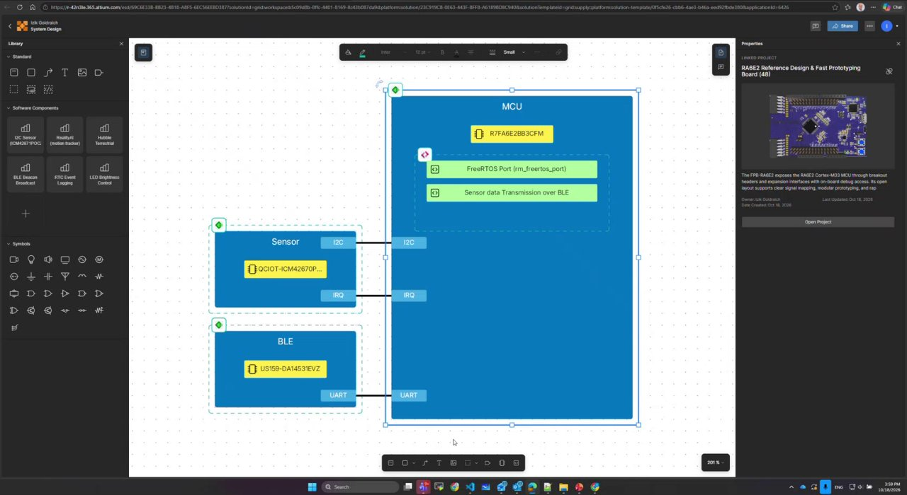
Figure 8. ESD: MCU, sensor and BLE blocks with their software components
Click on the hardware blanket of the MCU FPB-RA6E2. The hardware linked project is appearing on the right.
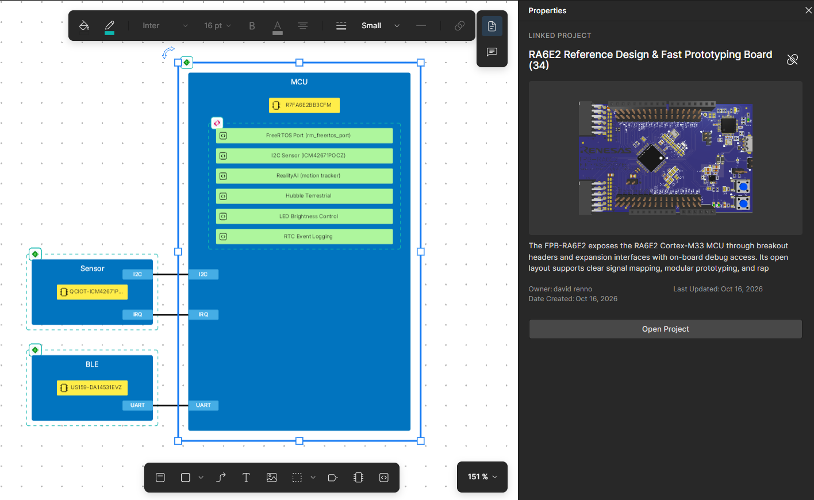
Figure 9. Linking a hardware reference design to the ESD
Clicking on “Open Project” to access the reference designs (schematics, BOM, manuals).
Figure 10. Hardware reference design (schematic) available from the workspace
Click on the pink icon on the software blanket to access the software linked project. Open the web IDE by clicking on “Open Project”.
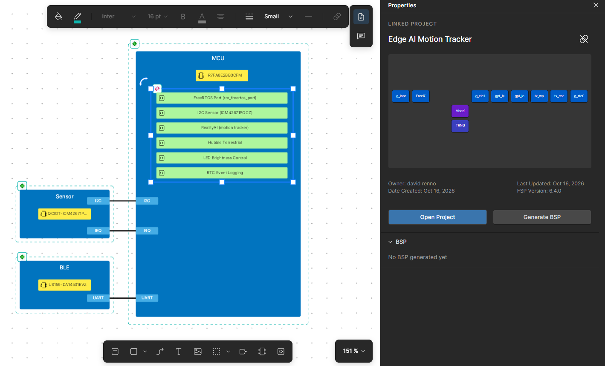
Figure 11. Open the Web IDE by clicking on “Open Project”
The Web IDE opens in the browser and the project start building: no download, no installation, no toolchain setup and no version matching.
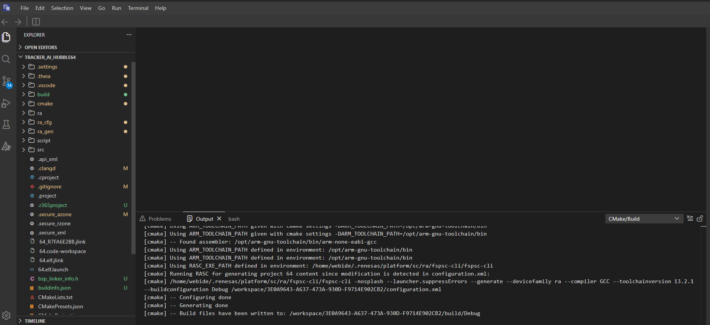
Figure 12. Web IDE: edit, compile, debug, download and run from the browser
Review the project structure. The software packages come from your ESD selections: sensor, Reality AI, Hubble, BLE and logger.
Locate the application “glue” code that connects the building blocks. The building blocks are architected by Renesas to be modular; the glue is application-specific.
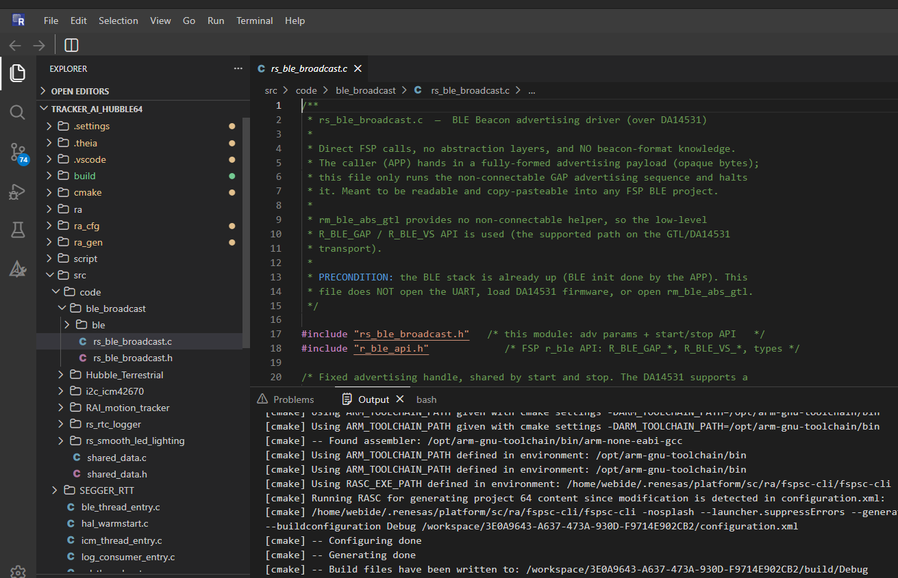
Figure 13. Software structure: reusable building blocks and application glue
Note: The web IDE complements your desktop IDE rather than replacing it. Agentic AI that translates the ESD design and intent into projects is planned.
Every cloud-connected device must be provisioned to its owner (“this device is mine”) so that its events appear under your own device in Hubble.
Find your user ID: the unique number on your table.
Enter your user ID in the provisioning setting of the project, as shown in Figure 14
In ble_thread_entry.c
On line 67, find start_hubble(INVALID_USER_ID);
Enter your hubble ID;
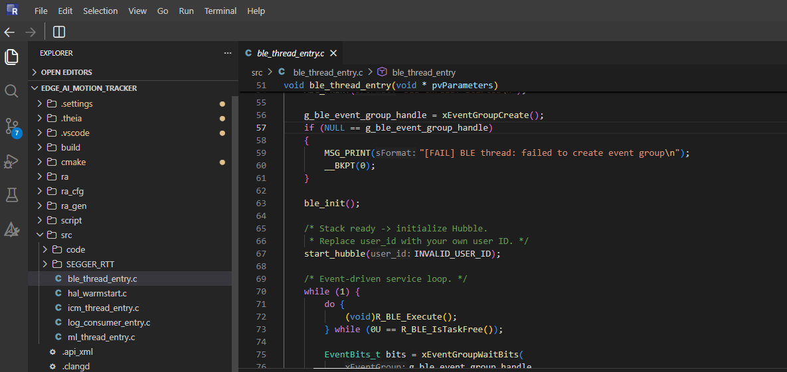
Figure 14. Provisioning: set your user ID
Click Build in the bottom bar of the web IDE. The environment is already configured; the compiler and linker run on Renesas servers.
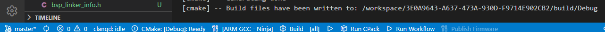
Figure 15. Provisioning: set your user ID
Check the build output in the terminal. The application, including AI classification, BLE and the cloud stack, fits in about 40 KB of RAM.
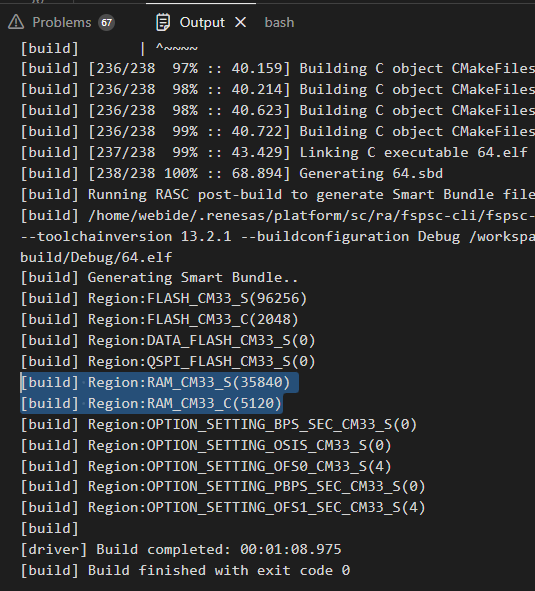
Figure 16. Build output: AI, BLE and cloud stack fit in 40 KB of RAM
Note: After any change to the .c and .h files, rebuild the project before flashing.
Open Debug from the left bar of the web IDE. Renesas 365 connects to your local hardware and finds the J-Link on the FPB-RA6E2: there is no traditional debug setup.
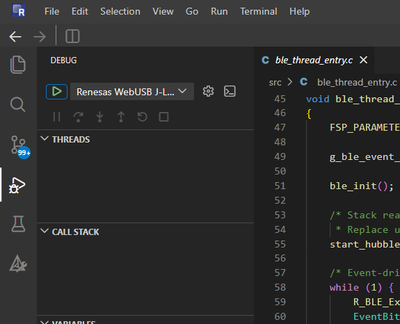
Figure 17. Web IDE: Select Debug in the left bar and click on the green play button
A browser pop-up window invites you to select and connect to the J-Link of the FPB-RA6E2. Click on it to connect your board.
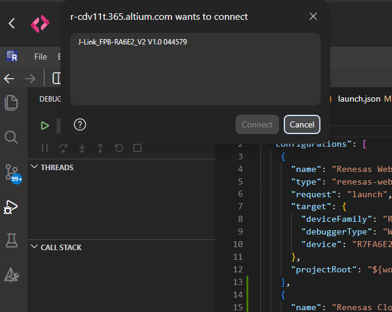
Figure 18. Web IDE: Connect your J-Link board
Start the debug session. The application is flashed and execution stops at main.
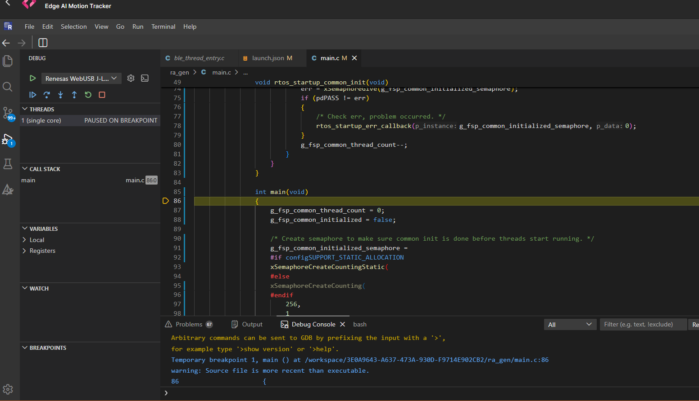
Figure 19. Debug in the browser: break in main, step, run, pause, call stack
Step through the code, then Run.
Pause and inspect the call stack and the active task. The CPU is mostly idle, which leaves headroom for more features or a lower-cost MCU.
With the application running, move the board in a circle and wave it. Each detected event is shown by the LED.
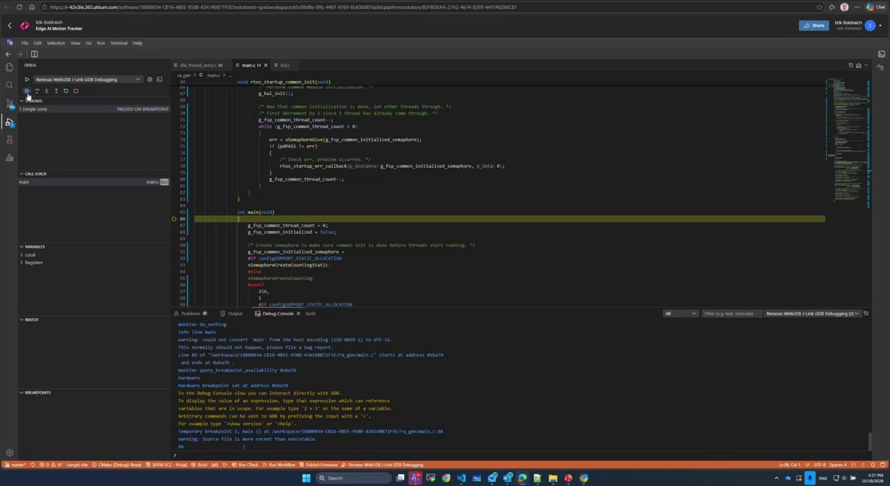
Figure 20. Events detected on the device and reported in the debug log
Open J-Link RTT Viewer to see each event logged locally (see Appendix 5.1).
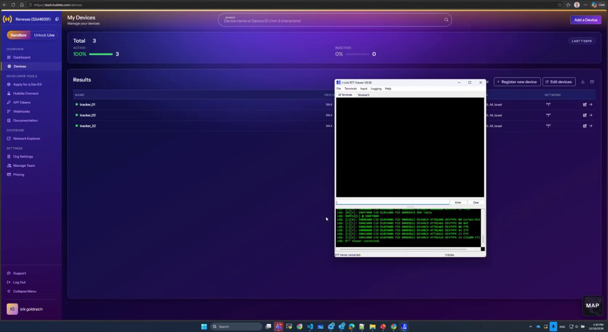
Figure 21. J-Link RTT Viewer showing each event, next to the Hubble console
Open the Hubble console and check that the events arrive under your own device.
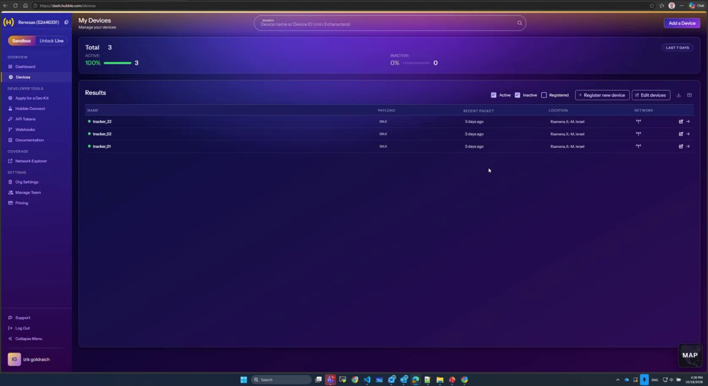
Figure 22. Hubble console: your provisioned device
Note: Hubble updates on its own cadence: use it as a validation that events arrived, not as a live view.
By following this guide, you have gone from concept to a working prototype: system design, hardware selection, reusable software, AI and cloud integration, then build, debug and a running device.
Use the time saved to explore “what if”: another AI model, a different sensor or another part. Suggested next steps:
Visit the Xplore Developer Hub and find the solutions that matter to you.
Register for Renesas 365 and experiment with the platform.
Explore reference applications: load one, build it, run it.
Become an early adopter: talk to the Renesas team and help shape the future of the platform.
This tracking node can be reused across many applications, including:
Table 3. Example Applications
| Market | Segment | Example applications |
|---|---|---|
| Industrial | Asset tracking & locationing | BLE tags for proximity and asset tracking; smart asset tracking label; crowdsourced location tags; AoA locator |
| Industrial | Condition monitoring | Remote predictive maintenance system |
| Industrial | Renewable energy & grid | Solar-powered location tracker |
| Building automation | Smart locks & access control | CSA Aliro-ready smart lock; smart lock with ultra-low-power Wi-Fi & BLE |
| Medical & healthcare | Patient monitoring | Health monitoring medical patch |
| Consumer | Wearables | Health monitor band; heatstroke prevention watch; smart ring; user badge |
| Consumer | Cameras | Battery-powered camera with AI object detection & motion sensing |
The RTT log viewer is currently an external application; integration into Renesas 365 is planned.
Install the J-Link software package from SEGGER J-Link downloads.
Launch J-Link RTT Viewer.
Select the USB connection to the on-board J-Link and set the target device to the RA6E2 (R7FA6E2BB), interface SWD.
Click OK to connect. Detected events appear in the terminal as you move the board.
Note: If the debug session in Renesas 365 is active, make sure the application is running (not paused) to see new events.
| Symptom | Check |
|---|---|
| Board not found when starting Debug | USB cable connected to the FPB-RA6E2; board powered. |
| No events detected | Pmods fully seated, logo upright: BLE on top, accelerometer below. |
| Events not visible in Hubble | User ID entered correctly in provisioning; allow time for Hubble to update. |
| MCU Board detected in Renesas 365 but Debug fails with “gdbserver exit 0” | The J-Link Firmware on the MCU board need to be updated. The simpler way is to download and install J-Link WinUSB Switcher Lite and configure the board in WinUSB mode as described in this guide. |
Technical Updates/Technical News
The latest information can be downloaded from the Renesas Electronics website.
Website and Support
Renesas Electronics Website – https://www.renesas.com/
Inquiries – https://www.renesas.com/contact/
| Revision | Date | Description |
|---|---|---|
| 1.00 | Oct 26, 2026 | Initial release. |